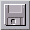
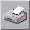
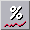

<!-- Documentation XQuad (c)1995-2000 AXENE contact axene@axene.org>
<html>

<head>
<title>Barre horizontale d'icônes &quot;Manipulations générales&quot;</title>
</head>

<body BGCOLOR="#FFFFFF" BACKGROUND="Images/back.gif" TEXT="#000000">

<p ALIGN="right">  </p>

<p><br>
<br>
La barre d'icônes 'Manipulations générales' permet d'accéder rapidement aux
fonctionnalités les plus souvent utilisées. Cette barre est la seule à ne pas avoir de
thème spécifique. <br>
<br>
</p>

<hr>

<p align="center"><br>
 <br>
<small><i>Photo d'écran&nbsp;: Barre d'icônes Générale. </i></small></p>

<p><br>
</p>

<hr>

<p><br>
</p>

<h3>Première section de la barre d'icônes&nbsp;:</h3>

<ul>
  <li> <a NAME="save_icon">le premier bouton icône permet de <b>sauvegarder
    la feuille de calcul active dans un fichier</b>. Si la feuille de calcul est nouvellement
    créée et n'a jamais été sauvée auparavant, le sélecteur de fichier 'Sauvegarde du
    document sous...&quot; apparaîtra pour choisir un nom de fichier. Dans le cas contraire,
    la feuille sera sauvée sous le nom de fichier courant. </a><br>
    &nbsp;</li>
  <li> <a NAME="print_icon">le second bouton icône permet d'<b>imprimer
    la feuille de calcul active</b>. Cliquer sur ce bouton ouvre la boîte de dialogue '</a><a HREF="Box_Print.html">Impression</a>'. </li>
</ul>

<p><br>
</p>

<h3>Seconde section de la barre d'icônes&nbsp;: </h3>

<ul>
  <li> <a NAME="cut_icon">le premier bouton icône permet de <b>couper
    les cellules sélectionnées et de les copier dans le presse-papiers</b>. Les cellules
    sélectionnées au moment du 'couper' seront effacées au moment du 'coller'. Seules les
    références des cellules sont gardées dans le presse-papiers, c'est-à-dire que si l'on
    change le contenu d'une cellule référencée avant le 'coller', c'est la nouvelle valeur
    qui sera collée. Faire un nouveau 'couper' écrase le contenu antérieur du
    presse-papiers. </a><br>
    &nbsp;</li>
  <li> <a NAME="copy_icon">le deuxième bouton icône permet
    de <b>copier les cellules sélectionnées dans le presse-papiers</b>. Seules les
    références des cellules sont gardées dans le presse-papiers, c'est-à-dire que si l'on
    change le contenu d'une cellule référencée avant le 'coller', c'est la nouvelle valeur
    qui sera collée. Faire un nouveau 'copier' écrase le contenu antérieur du
    presse-papiers. </a><br>
    &nbsp;</li>
  <li> <a NAME="paste_icon">le troisième bouton icône permet
    de <b>coller les cellules du presse-papiers dans la feuille de calcul</b>. Cette
    opération récupère dans le presse-papiers les références de cellules sauvées lors du
    dernier 'couper' ou 'coller' et les colle à l'emplacement de la cellule active. Tous les
    attributs des cellules sont collés au nouvel emplacement. Si une cellule de destination
    est pleine, elle ne sera pas écrasée par le 'coller'. Il est possible de faire plusieurs
    'coller' successifs. Si la dernière opération pour remplir le presse-papiers était un
    'couper', les cellules d'origine seront effacées (valeurs et attributs). </a></li>
</ul>

<p><br>
</p>

<h3>Troisième section de la barre d'icônes&nbsp;: </h3>

<ul>
  <li> <a NAME="equal_icon">le premier bouton icône permet
    d'<b>ajouter un signe '=' dans la barre d'édition avant le premier caractère</b>. Mettre
    un signe '=' au début du champ texte de la barre d'édition permet de commencer
    l'écriture d'une formule. S'il y a déjà un signe '=' au début de la barre d'édition,
    ce signe sera enlevé. </a><br>
    &nbsp;</li>
  <li> <a NAME="function_icon">le deuxième bouton icône
    permet d'<b>insérer un nom de fonction dans la barre d'édition</b>. Ce bouton ouvre la
    boîte de dialogue '</a><a HREF="Box_PasteFunction.html">Coller une fonction</a>'. La
    fonction éventuellement choisie dans cette boîte de dialogue sera insérée dans le
    champ texte de la barre d'édition au niveau du curseur texte. Si le curseur texte se
    trouve au début du champ texte, le signe '=' est ajouté automatiquement. <br>
    &nbsp;</li>
  <li> <a NAME="sum_icon">le troisième bouton icône permet d'<b>insérer
    la fonction somme dans la barre d'édition</b>. La chaîne de caractère <tt>'somme()'</tt>
    sera insérée au niveau du curseur texte. Si le curseur texte se trouve au début du
    champ texte, le signe '=' est ajouté automatiquement. </a></li>
</ul>

<p><br>
</p>

<h3>Quatrième section de la barre d'icônes&nbsp;: </h3>

<ul>
  <li> <a NAME="thousands_icon">le premier bouton icône
    permet d'<b>appliquer le format de nombre <i>'Milliers'</i> standard</b> à toutes les
    cellules sélectionnées. Le format <i>'Milliers'</i> standard affiche les nombres en
    séparant chaque groupes de trois chiffres par un espace.<br>
    Lorsque la cellule active est au format <i>'Milliers'</i> standard, ce bouton icône est
    enfoncé. Si on clique sur ce bouton quand il est enfoncé, les cellules sélectionnées
    repassent au format de nombre <i>'Standard'</i>. </a><br>
    &nbsp;</li>
  <li> <a NAME="currency_icon">le deuxième bouton icône
    permet d'<b>appliquer le format de nombre <i>'Monétaire'</i> standard</b> à toutes les
    cellules sélectionnées. Le format <i>'Monétaire'</i> standard affiche les nombres
    suivis de l'unité <tt>' F'</tt> pour francs (les nombres négatifs apparaissent en
    rouge).<br>
    Lorsque la cellule active est au format <i>'Monétaire'</i> standard, ce bouton icône est
    enfoncé. Si on clique sur ce bouton quand il est enfoncé, les cellules sélectionnées
    repassent au format de nombre <i>'Standard'</i>. </a><br>
    &nbsp;</li>
  <li> <a NAME="percent_icon">le troisième bouton icône
    permet d'<b>appliquer le format de nombre <i>'Pourcentages'</i> standard</b> à toutes les
    cellules sélectionnées. Le format <i>'Pourcentage'</i> standard affiche les nombres
    suivis du signe <tt>'%'</tt> et multipliés automatiquement par 100.<br>
    Lorsque la cellule active est au format <i>'Pourcentages'</i> standard, ce bouton icône
    est enfoncé. Si on clique sur ce bouton quand il est enfoncé, les cellules
    sélectionnées repassent au format de nombre <i>'Standard'</i>. </a><br>
    &nbsp;</li>
  <li> <a NAME="scientific_icon">le quatrième bouton
    icône permet d'<b>appliquer le format de nombre <i>'Scientifique'</i> standard</b> à
    toutes les cellules sélectionnées. Le format <i>'Scientifique'</i> standard affiche les
    nombres sous forme <tt>'mantisse E +exposant'</tt>. La partie entière de la mantisse ne
    comportera toujours qu'un seul chiffre.<br>
    Lorsque la cellule active est au format <i>'Scientifique'</i> standard, ce bouton icône
    est enfoncé. Si on clique sur ce bouton quand il est enfoncé, les cellules
    sélectionnées repassent au format de nombre <i>'Standard'</i>. </a><br>
    &nbsp;</li>
  <li> <a NAME="engineer_icon">le cinquième bouton icône
    permet d'<b>appliquer le format de nombre <i>'Ingénieur'</i> standard</b> à toutes les
    cellules sélectionnées. Le format <i>'Ingénieur'</i> standard affiche les nombres sous
    forme <tt>'mantisse E +exposant'</tt> avec un exposant toujours multiple de 3.<br>
    Lorsque la cellule active est au format <i>'Ingénieur'</i> standard, ce bouton icône est
    enfoncé. Si on clique sur ce bouton quand il est enfoncé, les cellules sélectionnées
    repassent au format de nombre <i>'Standard'</i>. </a></li>
</ul>

<p><br>
</p>

<h3>Cinquième section de la barre d'icônes&nbsp;: </h3>

<ul>
  <li> <a NAME="inc_digit_icon">le premier bouton icône
    permet d'<b>ajouter une décimale à l'affichage</b> pour toutes les cellules
    sélectionnées. Cette fonction ajoute 1 à la </a><a HREF="Box_NumFmt_Display.html#textfield_min_prec">précision minimale du format de nombre</a>
    de chaque cellule sélectionnée. La <a HREF="Box_NumFmt_Display.html#textfield_max_prec">précision
    maximale du format de nombre</a> devient égale à la précision minimale. La précision
    minimale peut aller jusqu'à 20 décimales ; au-delà, ce bouton n'a plus d'effet. <br>
    &nbsp;</li>
  <li> <a NAME="dec_digit_icon">le second bouton icône
    permet d'<b>enlever une décimale à l'affichage</b> pour toutes les cellules
    sélectionnées. Cette fonction ôte 1 à la </a><a HREF="Box_NumFmt_Display.html#textfield_min_prec">précision minimale du format de nombre</a>
    de chaque cellule sélectionnée. La <a HREF="Box_NumFmt_Display.html#textfield_max_prec">précision
    maximale du format de nombre</a> devient égale à la précision minimale. La précision
    minimale ne peut descendre en dessous de 0 décimale ; au-delà, ce bouton n'a plus
    d'effet. </li>
</ul>

<p><br>
</p>

<hr>

<p ALIGN="right"></p>
</body>
</html>
